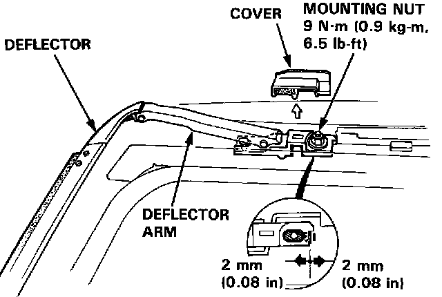
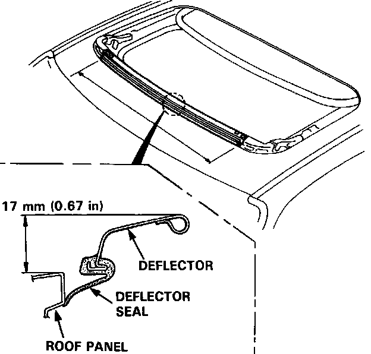

Deflector Adjustment
Deflector AdjustmentNOTE: A gap between deflector seal and roof panel will cause wind noise when driving at high speed with the glass open.

1. Open the glass and pry the covers off both sides.
2. Loosen the mounting nuts.
NOTE: The deflector can be adjusted 2 mm (0.08 in) forward or backward.

3. Adjust the deflector forward or backward so the edge of the deflector seal touches the roof panel evenly.
The deflector seal should touch the roof panel across entire front edge.
NOTE: The height of the deflector arm when open cannot be adjusted. If damaged or deformed, replace it.